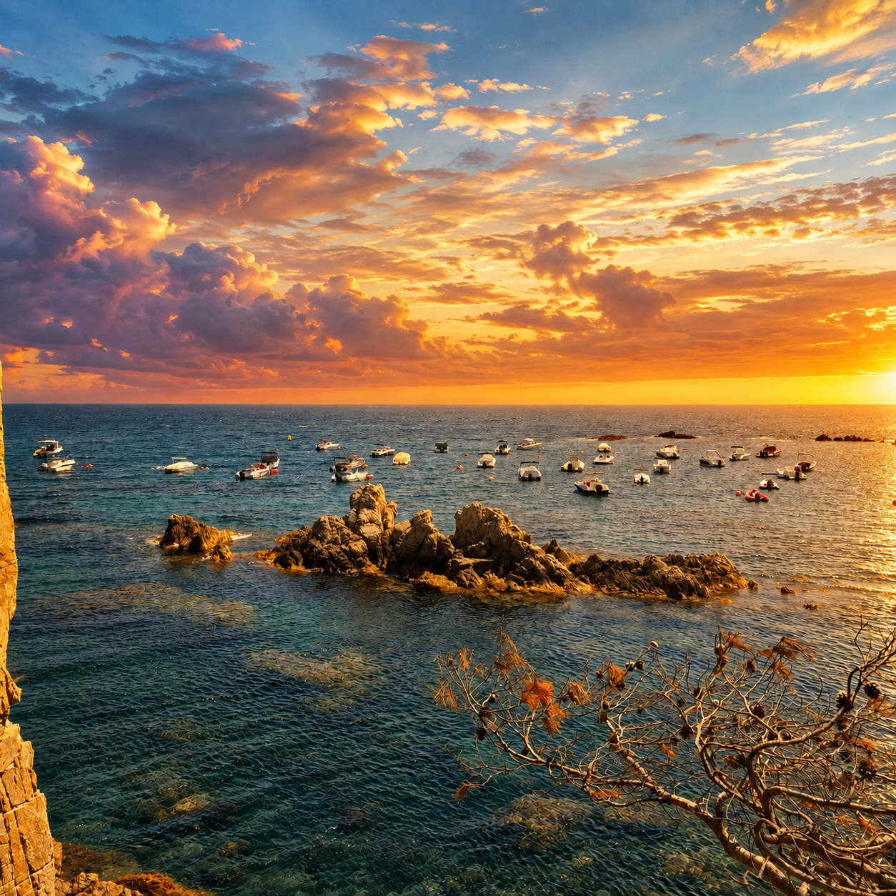

Fundació
Una història vinculada al mar, a Canyet i a les persones que han fet possible la vida nàutica d'aquest indret.

Un espai únic al cor de la Costa Brava
Història, fundació, valors i comunitat
→Socis, fondejos, embarcacions i serveis
→Sortides especials i experiències al mar
→Història de la cala, pontets i entorn
→Informació privada, avisos i documentació
→Estat de la mar, vent i previsió a Canyet
→El Club Nàutic Canyet neix amb una vocació clara: preservar una manera de viure el mar, la costa i la comunitat de Canyet · Rosamar.
Més que un espai per a la navegació, el club és un punt de trobada entre persones unides per la passió pel Mediterrani i pel privilegiat entorn de la Costa Brava.
Una història vinculada al mar, a Canyet i a les persones que han fet possible la vida nàutica d'aquest indret.
Respecte pel mar, convivència, tradició, natura i una manera responsable de gaudir de la Costa Brava.
Un club pensat per compartir experiències, navegar i mantenir viu l'esperit de Canyet.
Ser soci del Club Nàutic Canyet significa formar part d'una comunitat vinculada al mar i disposar d'un entorn privilegiat per gaudir de la navegació.
Quota bàsica que paguen tots els socis.
Quota bàsica del Club.
Per fer-se soci del CN Canyet, s'ha d'abonar una quota d'entrada única de 1.500 €. Aquest pagament és a fons perdut: es paga una sola vegada i no es recupera si el soci decideix abandonar el Club.
Pagament únic · no reemborsable.
Els menors de 32 anys no paguen l'adhesió al Club.
Exempció de la quota d'adhesió per a menors de 32 anys.
Tarifes de la temporada 2025 del Club Nàutic Canyet.
| Concepte | Preu brut | IVA (21 %) | Preu final |
|---|---|---|---|
| Quota bàsica (la paguen tots els socis) | 250 € | — | 250 € |
| Fins a 3,99 m. | 820 € | 172,20 € | 992,20 € |
| Entre 4,0 i 5,99 m. | 1.181 € | 248,01 € | 1.429,01 € |
| Entre 6,0 i 7,99 m. (*) | 1.505 € | 316,05 € | 1.821,05 € |
| Semirígides entre 8,0 i 10,5 m. (**) | 2.155 € | 452,55 € | 2.607,55 € |
(*) Fins a 7,5 m d'eslora màxima permesa, per a embarcacions de fibra de vidre o, en defecte d'això, 2 Tn de desplaçament. (**) Sota sol·licitud expressa.
| Període | Preu brut | IVA (21 %) | Preu final |
|---|---|---|---|
| Tarifa / dia | 100 € | 21 € | 121 € |
| 1 setmana | 663 € | 139,23 € | 802,23 € |
| 2 setmanes | 1.077 € | 226,17 € | 1.303,17 € |
| 3 setmanes | 1.408 € | 295,68 € | 1.703,85 € |
| 4 setmanes | 1.768 € | 371,28 € | 2.139,28 € |
| Període | Preu brut | IVA (21 %) | Preu final |
|---|---|---|---|
| 1 setmana | 292 € | 61,32 € | 353,32 € |
| 2 setmanes | 475 € | 99,75 € | 574,75 € |
| 3 setmanes | 640 € | 134,40 € | 774,40 € |
| 4 setmanes | 773 € | 162,33 € | 935,33 € |
De l'1 de juny al 31 d'agost
| Concepte | Preu brut | IVA (21 %) | Preu final |
|---|---|---|---|
| Fins a 4,5 m d'eslora | 1.600 € | 336 € | 1.936 € |
| De 4,5 a 7,5 m d'eslora | 2.300 € | 483 € | 2.783 € |
(*) Fins a 7,5 m d'eslora màxima permesa o, en defecte d'això, 2 Tn de desplaçament.
Activitats especials pensades per gaudir de la Costa Brava des del mar.

Sortida en embarcació per gaudir dels focs artificials de Sant Feliu de Guíxols des del mar.

Sortida especial per viure l'eclipsi des del mar davant de Canyet · Rosamar.

Descobrir Cala Canyet és endinsar-se en un racó de la Costa Brava on la natura més salvatge s'abraça amb la història de la burgesia catalana. Molt abans de convertir-se en el paratge residencial que avui coneixem, aquest racó del massís de les Gavarres acollia l'històric Mas de Canyet, un espai que la família Castelló transformaria per sempre a principis del segle XX.
Origen modernista: la petjada de la família Castelló. La fisonomia única de la nostra cala va començar a dibuixar-se al voltant de 1912. En aquell moment, la finca pertanyia als Castelló, una família adinerada vinculada a la pròspera indústria surera de Sant Feliu de Guíxols. Va ser l'enginyer Ricard Castelló i Badia qui, fascinat per la bellesa dels illots granítics que emergien del mar, va projectar un ambiciós accés privat de recreo.
Sota la seva direcció, es va desafiar l'onatge per construir Els Pontets, una obra d'enginyeria civil integrada artesanalment sobre la roca viva. Aquestes passarel·les estretes i sinuoses no buscaven imposar-se al paisatge, sinó adaptar-se orgànicament a la morfologia de les roques rosades per permetre a la família endinsar-se còmodament al mar per pescar o descansar. Avui, aquest conjunt centenari està protegit oficialment com a Bé Cultural d'Interès Local (BCIL).
El mirador clàssic: finestra al Mediterrani. Elevant-se sobre la Punta de Canyet, la propietat va projectar una elegant glorieta-mirador de tall clàssic. Concebuda com el punt arquitectònic culminant de la finca, aquesta estructura circular es va dissenyar amb un propòsit clar: oferir una perspectiva perfecta del recorregut dels pontets sobre el mar i vigilar l'horitzó. Les seves columnes, desgastades amb els anys per la tramuntana i la salabror, regalen una de les postals més evocadores i romàntiques de tot el litoral empordanès.
El viver de llagostes: exclusivitat a la postguerra. L'evolució de l'indret va continuar durant la dècada de 1940, quan la propietat va passar a mans de la família Sacrest. Respectant el camí marí traçat per Ricard Castelló, els nous propietaris van afegir un element etnològic singular a la cala: un viver artificial excavat a la roca.
En aquest espai, protegit dels corrents per comportes, es conservaven vives en nanses les captures de llagostes fresques. L'objectiu era abastir els luxosos banquets privats amb què s'obsequiava els selectes convidats de l'alta societat que visitaven la masia. Dècades més tard, aquesta zona modificada es convertiria en el petit embarcador que avui complementa l'encant portuari de la cala.
Un patrimoni que sobreviu al mar. L'onatge de mar obert sempre ha estat el gran testimoni i el major desafiament d'aquestes estructures. Després de ser castigats per innombrables temporals al llarg d'un segle —l'últim d'ells el devastador temporal Gloria el 2020—, els pontets han estat fidelment reconstruïts respectant la seva fisonomia catalogada. Avui, caminar per Els Pontets, contemplar l'horitzó des del mirador o evocar l'antic viver és connectar directament amb els secrets, el luxe i la història viva de la Costa Brava.
Estat actual de la mar, vent i condicions meteorològiques a Canyet · Rosamar.
Un espai reservat als membres del Club Nàutic Canyet per consultar informació, avisos, documentació i comunicacions del club.
Introdueix el PIN d'accés.
Per a qualsevol consulta sobre el Club Nàutic Canyet, posa't en contacte amb nosaltres.